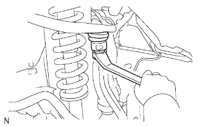

ПОВОРОТНЫЙ КУЛАК > УСТАНОВКА |
| 1. УСТАНОВИТЕ ЛЕВЫЙ ПОВОРОТНЫЙ КУЛАК |
|  |
Установите поворотный кулак на верхний рычаг передней подвески и закрепите его гайкой.
Установите новый фиксатор.
| 2. УСТАНОВИТЕ КРЕПЛЕНИЕ ЛЕВОГО ПЕРЕДНЕГО НИЖНЕГО ШАРОВОГО ШАРНИРА |
Установите крепление переднего нижнего шарового шарнира и закрепите его 2 болтами.
| 3. ПОДСОЕДИНИТЕ НАКОНЕЧНИК ЛЕВОЙ РУЛЕВОЙ ТЯГИ В СБОРЕ |
Установите наконечник рулевой тяги на поворотный кулак и закрепите его гайкой.
Установите новый шплинт.
| 4. УСТАНОВИТЕ СТУПИЦУ ЛЕВОГО ПЕРЕДНЕГО КОЛЕСА В СБОРЕ |
Установите ступицу переднего колеса (Нажмите здесь).
| 5. УСТАНОВИТЕ ЛЕВЫЙ ПЕРЕДНИЙ ДАТЧИК ЧАСТОТЫ ВРАЩЕНИЯ |
Установите датчик частоты вращения и закрепите его болтом.
| 6. ПОДСОЕДИНИТЕ ПРОВОД К ОТРИЦАТЕЛЬНОМУ ВЫВОДУ АККУМУЛЯТОРНОЙ БАТАРЕИ |
| 7. УСТАНОВИТЕ ПЕРЕДНЕЕ КОЛЕСО |
| 8. ПРОВЕРЬТЕ И ОТРЕГУЛИРУЙТЕ УГЛЫ УСТАНОВКИ ПЕРЕДНИХ КОЛЕС |
Проверьте и отрегулируйте углы установки передних колес (Нажмите здесь).
| 9. ПРОВЕРЬТЕ ПЕРЕДНИЙ ДАТЧИК ЧАСТОТЫ ВРАЩЕНИЯ |
Проверьте передний датчик частоты вращения (Нажмите здесь).